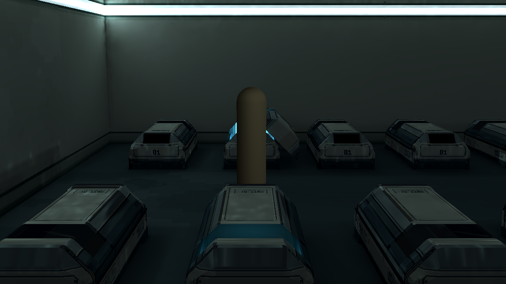

Room 1 / 墙地局部像素材质 r1
学校 r3 的镜头、暗房照明与1280×720原分辨率。只试左墙一段及相邻地面；材料待审。

小样在画面左侧。当前暗房照明下变化克制；下方同时提供实际截图的显示放大和原生贴图。没有提亮截图、改变曝光或用后期像素化替代贴图。
同机位：旧 / 新
左侧局部显示放大
旧：同一张原始截图的显示放大新：相同范围、相同放大
沿原镜头跟随范围向前观察
原生像素贴图 · 最近邻4倍
只改变两个既有表面的局部固有色；UV2烘焙光和人物阴影沿用。Godot打开小样场景按F6：M循环旧／墙／地／两者，J回样段，H隐藏说明。40 texels/m仅是本轮小样值。PixelLab本次两次编辑，共20次额度；第三方参考截图未提交。